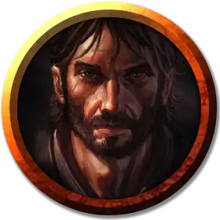

Санбалет
Sanbalet
Средний Гуманоид (Человек), нейтрально-злой, именной НИП

Класс Доспеха 11
Хиты 27 (6к8)
Скорость 30 футов
| мод | спас | ||
|---|---|---|---|
| СИЛ | 10 | +0 | +0 |
| ЛОВ | 12 | +1 | +1 |
| ТЕЛ | 11 | +0 | +0 |
| мод | спас | ||
|---|---|---|---|
| ИНТ | 16 | +3 | +3 |
| МДР | 13 | +1 | +1 |
| ХАР | 14 | +2 | +2 |
Навыки Магия +5
Чувства пассивное Восприятие 11
Языки Общий
Опасность 1 (200 опыта)
Бонус мастерства +2
Особенности
Использование заклинаний. Санбалет является заклинателем 3-го уровня. Его базовой характеристикой является Интеллект (Сл спасброска от заклинания 13, +5 к попаданию атаками заклинаниями). У него подготовлены следующие заклинания волшебника:
• Заговоры (неограниченно): пляшущие огоньки [dancing lights], малая иллюзия [minor illusion], луч холода [ray of frost];
• 1 уровень (4 ячейки): очарование личности [charm person], сверкающие брызги [color spray], волшебная стрела [magic missile], безмолвный образ [silent image];
• 2 уровень (2 ячейки): волшебные уста [magic mouth], палящий луч [scorching ray].
Действия
Кинжал. . Рукопашная или дальнобойная атака оружием: + 3 к попаданию, досягаемость 5 футов или дистанция 20/60 футов, одна цель. Попадание: 3 (1к4 + 1) колющего урона.
Описание
В "Зловещей тайне Солтмарша" Санбалет является лидером наземной части контрабандной банды. Он хитрый нарцисс, интересующийся иллюзиями и контролем сознания. Он защищает контрабанду, хранящуюся в пещерах под домом с привидениями.